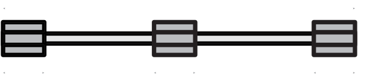

- jednoduchý a mnohostranně využitelný konstrukční prvek, určený pro vytvoření univerzálních liniových kotevních míst na plochých střechách s PVC-P nebo TPO fóliemi
- umožňuje přímé přikotvení kabelových drah, potrubních systémů apod. nebo roznášecích roštů pro těžší konstrukce, např. pro fotovoltaické panely
- skládá se ze třech uzavřených plastových omega profilů délky 150 mm a výšky 31 mm, vyrobených z UV stabilizovaného polymeru, spojených výztuhou ze silnostěnného otevřeného hliníkového U profilu délky 1,5 m nebo 2,0 m; omega profily je možno posouvat dle potřeby podél hliníkové výztuhy
- varianty FIXPROFIL/PVC, FIXPROFIL/TPO-PP a FIXPROFIL/TPO-PE jsou kompatibilní s většinou PVC-P a TPO folií, k nimž se jednoduše horkovzdušně navařují ručním svařovacím přístrojem
- je velmi levný, účinný a univerzální a vyznačuje se rychlou a jednoduchou montáží
- má stejnou životnost jako samotná polymerní krytina
- svojí konstrukcí nebrání odtoku vody